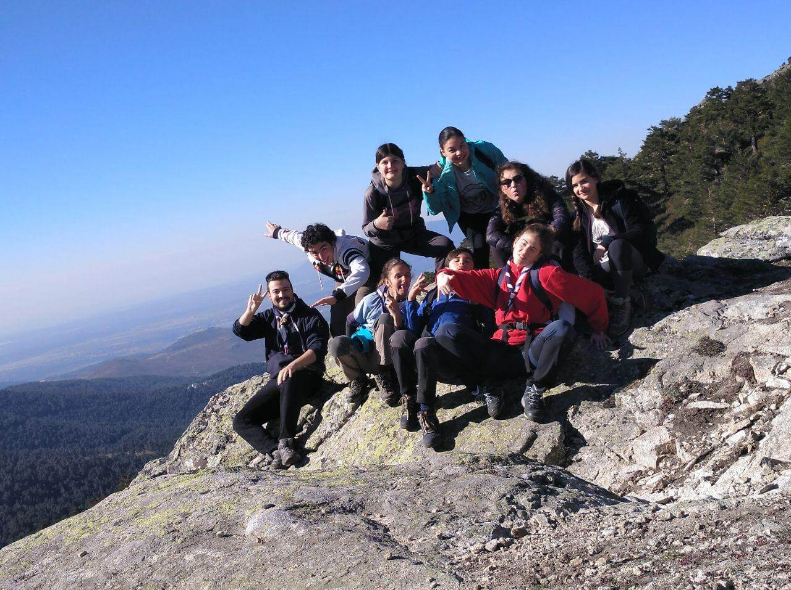
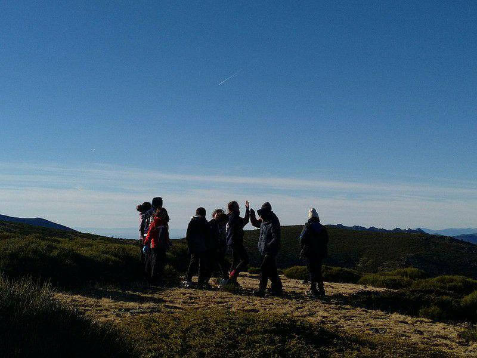
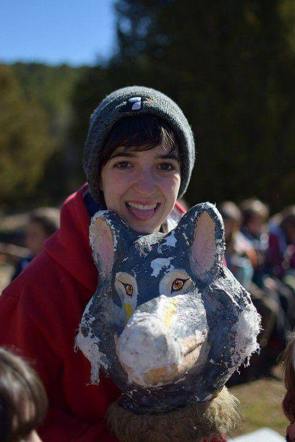
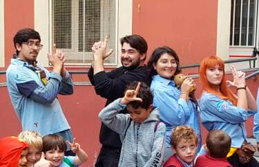
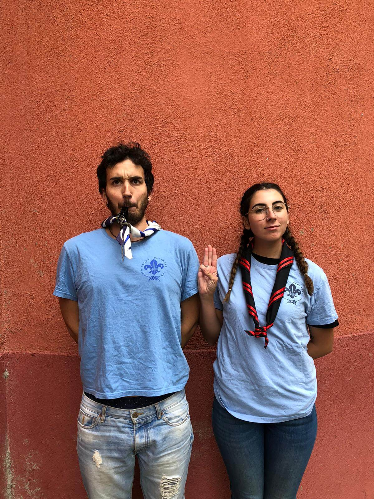

2019▼
¡YA ESTÁN LAS FOTOS DE LAS ACAMPADAS DE UNIDAD! (PARTE I)
19 de noviembre
Este último fin de semana se fueron de acampada tres unidades (¡wow!); Castores, Manada y Tropa .
Por un lado, los castorcillos y los lobatos fueron juntos a la Casilla del Mortero. Como podréis ver aquí, ¡se lo pasaron genial!

Además, los GG.CC. tuvieron sus promesas de castor mientras que los VV.LL. se lobatizaron.
Por otro lado, la Tropa se fue de acampada al refugio del Pozo de las nieves, por el Castañar (¡menudo frío!). Vieron al árbol El Abuelo, que tiene más de 600 años, y, tras una ruta de 14 km con muchas cuestas, llegó al deseado refugio.
También fijaron objetivos para toda la ronda, dentro de cada patrulla.
Aprovechad esta semana para descansar que este sábado se van de ruta la Esculta y el Clan, mientras que el resto de unidades tienen reunión habitual.
¡Buena caza y largas lunas!
EL CALOR DEL AMOR EN UNA ACAMPADA
01 de noviembre
Ya volvimos de nuestra tradicional acampada de grupo. Una experiencia para que los nuevos y nuevas vayan aprendiendo qué es eso de acampar, salir al campo y desconectar de las pantallas y la rutina de la ciudad... aunque bueno, eso también se puede aplicar a todo el mundo.
Este año, volvimos a Muñopedro aún con el frío recuerdo del año pasado en que la nieve y las heladas nos impidieron realizar muchas de las actividades. Lo que nos encontramos, no obstante, fue un solazo de los que hacen afición. No os confundáis; nos gusta la lluvia y el frío, pero tener solecito siempre facilita las cosas.
Tras bajar del autocar y estirar las piernas, tocó repartir y montar las tiendas. Para muchos y muchas era la primera vez, pero los que llevan más tiempo siempre están dispuestos a enseñar los entresijos más ocultos de nuestras tiendas.
Después llegó la comida, tiempo por unidades y, finalmente, el fuego de grupo. Una de nuestras tradiciones más bonitas en las que todas las unidades hacen una actuación en torno al fuego (de ahí el nombre), y se finaliza con el "Run Run". A algunos todavía se nos ponen los pelos de punta cuando escuchamos la canción de "Llamada al fuego".
La mañana siguiente dio comienzo el juego de grupo. Este año, Rodri y Horca fueron los encargados de prepararlo. El juego consistió en el desarrollo de un producto a elección de los equipos (formados por personas de todas las unidades mezcladas). Para ello, tenían que pasar por todas las pruebas de un proyecto, simulado por distintos juegos movidos y de lógica, con los que conseguir los puntos suficientes con los que construir sus ideas, pero ¡no sólo eso! También tenían que crear un anuncio en el que intentar convencer al jurado de que su invento era el mejor.
Tras la comida, tocaba recoger, hacer batida y volverse a cargar el macuto a la espalda. La canción de despedida terminó y volvimos a Madrid con ganas de repetir. Pero eso ya la semana que viene.
No olvidéis que esta semana es libre, así que... ¡Disfrutad del puente!
¡NOS VAMOS DE ACAMPADA!
21 de octubre
Como sabéis ya de otros años, para dar comienzo a la ronda es costumbre celebrar una acampada de grupo, y en esta ocasión nos iremos el fin de semana del 26-27 de octubre.

Cosas importantes:
-¿Cuándo nos vamos?
Hemos quedado el sábado 26 a las 9:00 en San Bernardo 99, bis.
-¿A dónde nos vamos?
Nos vamos a Muñopedro (Segovia), donde nos conocen después de muchos años yendo allí a acampar.

-¿Qué llevamos de comida?
Para el sábado 26:
- Desayuno en casa
- Comida: tupper o bocata traído desde casa. ¡No hace falta postre!
- Merienda: la pone grupo
- Cena: tupper o bocata traído desde casa. ¡No hace falta postre!
Para el domingo 27:
- Desayuno: lo pone grupo
- Comida: tupper o bocata traído desde casa. ¡No hace falta postre!
-¿Y en el macuto?
Saco (de invierno) y la esterilla, ropa de abrigo, chubasquero impermeable, linterna, cosas de aseo, cantimplora (llena), ropa (y mudas) de recambio.
Además deben llevar el uniforme (polo/camiseta azul de grupo y pañoleta en caso de que hayan hecho las Promesa) y botas de monte.
-Consejitos:
Es muy importante marcar toda la ropa y objetos personales de los niños.
Si el saco de dormir no es muy gordo, podéis meter una mantita para que se la pongan por dentro  Como ya comentamos en muchas asambleas, sobre todo en las unidades pequeñas, hacer el macuto con vuestros hijos e hijas tiene mucha importancia porque así prestan atención y saben dónde tienen guardadas cada cosa.
¡NO OS OLVIDÉIS DE CONFIRMAR ASISTENCIA Y ENTREGAR LAS AUTORIZACIONES Y FICHAS MÉDICAS SI NO SE HAN ENTREGADO TODAVÍA!
¡Nos vemos el sábado!
¡PRESENTAMOS LOS NUEVOS KRAALES PARA LA RONDA 2019/2020!
08 de octubre
¡Pero bueno! ¿Qué es esto que tenemos aquí? Un diseño elegante, fotos molonas y gente con estilo... Efectivamente, ¡es la nueva web del grupo Pléyades!
Es una novedad importante que nos trae la nueva ronda. Pero no es para nada la única, ni la más esperada. Ese honor le corresponde a la presentación de los nuevos kraales que se hizo en la primera reunión el pasado 5 de octubre.
Por si os la perdisteis y aún no os habéis enterado, ¡os la contamos aquí y ahora!
Castores
La colonia combina scouters de varias edades. Por una parte tenemos a Nathaly, que ha vuelto a esta unidad después de un año en el clan. Se ha traído consigo a Ricky, que acaba de subir de la unidad mayor. Sandra estará trabajando este año en esta unidad, después de un año con la Tropa, coordinándola (así son las cosas y así se las contamos). Y vuelve a participar en el grupo después de un tiempo fuera Pablo Diablo, que estará con los más pequeños.
Manada
¡El equipo de la Manada de este año está lleno de energía, ganas e ideas nuevas! Por un lado tenemos a Rodri, Tyren y Amaia, recién subidos del Clan, y por otro se les une Raúl, que trabajará en esta unidad tras su paso por la Colonia. Kottick, también conocida como Teresa, ocupará de nuevo este año su puesto de vieja loba, y será la coordinadora de sección.
Tropa
La Tropa del año pasado era reducida, pero este año han cambiado las tornas. Al igual que sus educandos, el kraal es también bastante numeroso. Tenemos a los ya experimentados As de Guía (Alfonso), Horca (Víctor) y Rizo (Messua) a los que se une la recién llegada al grupo Gaza (Laura). Completan el equipo Ballestrinque (Pablo) y Alondra (Meskerem), que se incorporará tras sus andanzas por tierras francesas.

Esculta
Este año la Esculta es aún más numerosa, pero tiene un kraal a la altura. Coordina Fao, aunque se incorporará un poquito tarde a las actividades del grupo. Le acompañan Milena y la veterana y archiconocida por todos Irene.
Clan
El Clan de este año es muy distinto del que hubo el año pasado, y su kraal también. Tenemos al potente dúo de Raquel y Alex, que trabajaron hace dos años con la esculta, y Raquel (Rainbow) que trabajará con ellos y coordinará la sección.
